Steering Torque Test System | The Automotive Research Association of India (ARAI)
Sept. 2024 - Present

 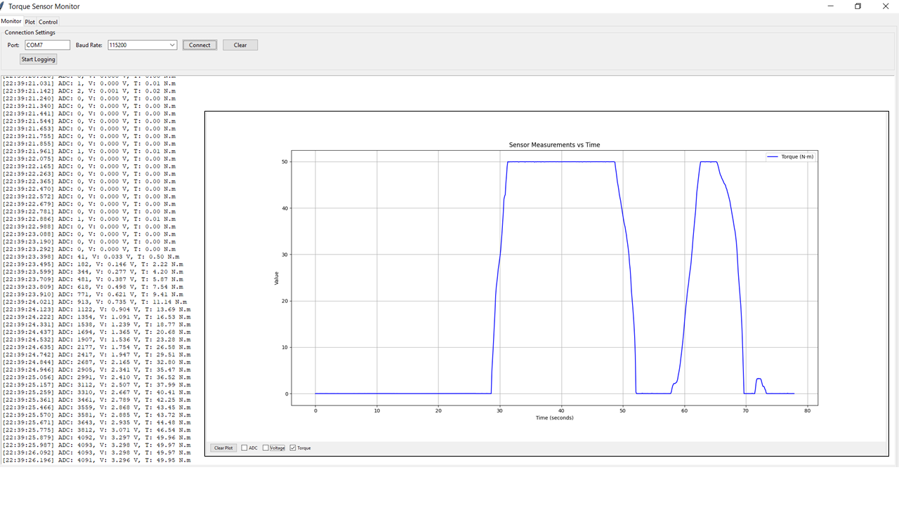
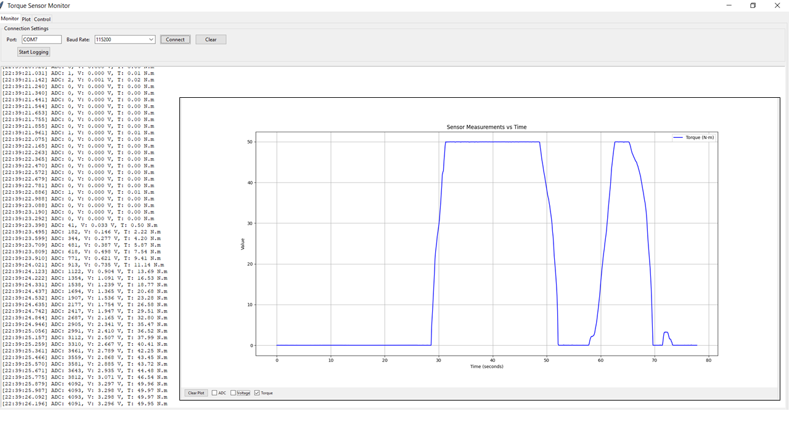
- Engineered real-time cascaded PID control system for 1KW AC servo motor using STM32F446RE MCU, integrating position and velocity feedback loops to achieve <0.1° positioning accuracy
- Developed deterministic RTOS scheduler managing multi-rate tasks (20kHz motor commutation, 1kHz position control, 500Hz sensor acquisition) with <50µs control jitter
- Created Python-based GUI application enabling real-time visualization of torque-angle-time relationships and automated test cycle execution
Camera Monitoring System/Image Quality Testing Software | ARAI
Mar. 2024 - Present
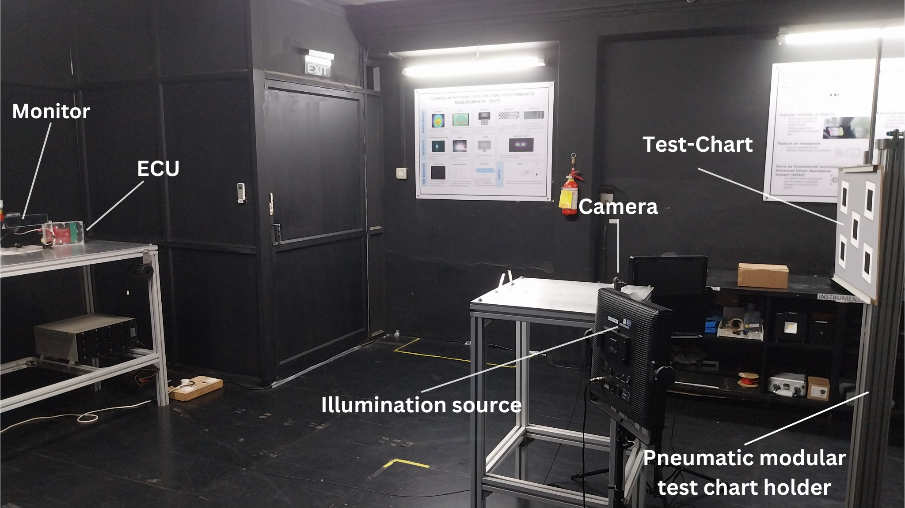
.png) 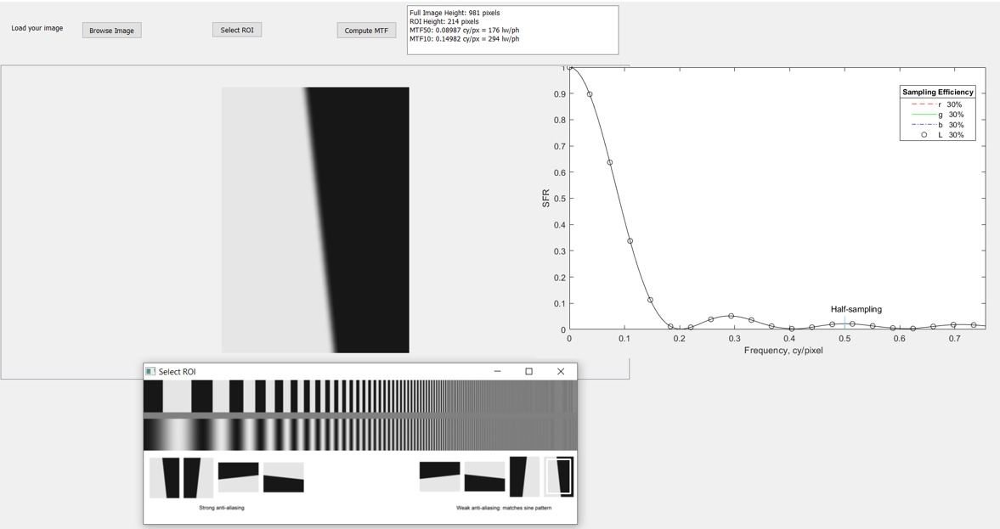
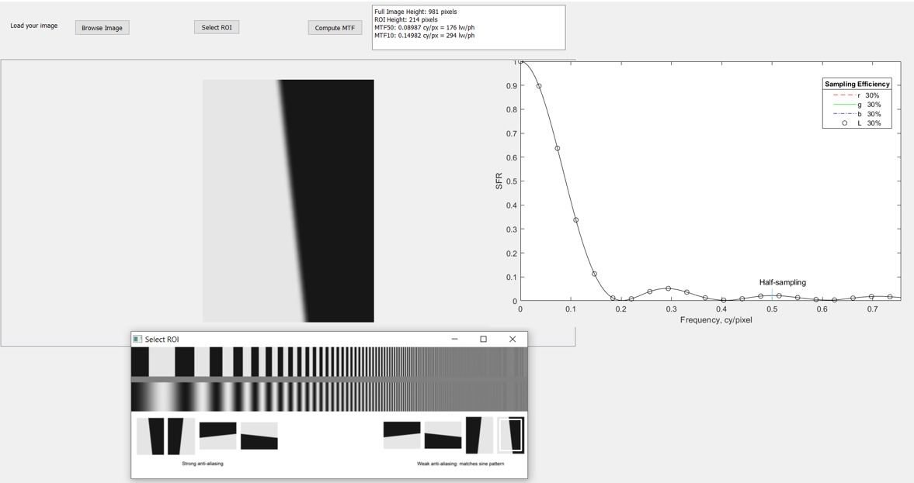
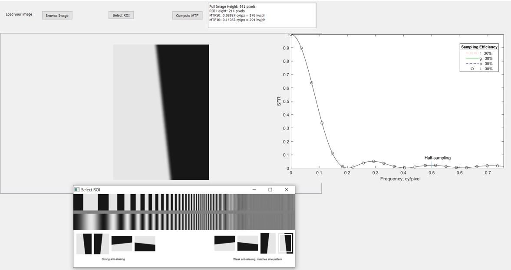
First-of-its-kind CMS testing facility in India and Third-of-its-kind in the world, established at ARAI Safety and Homologation Laboratory
Enables testing compliance with ISO 16505, ECE R46, and AIS 001/002 (Rev. 2) — 2023 standards
Critical for advancing vehicle safety and ADAS technologies in India
- Developed high-precision image quality testing software (C++, OpenCV, Qt5) that achieved 99% accuracy compared to SFRMAT and MITRE algorithms in camera resolution measurements, resulting in 7.75Lakhs INR ($9,000 USD) cost savings, Copyright of software is in progress
- Designed and developed high-precision trans-impedance amplifier device with switchable feedback resistance (1kQ-100kQ), achieving three-stage gain control and <10mVp-p noise performance in photodetection measurements for testing Camera's temporal performance
- Designed modular testing architecture supporting multiple chart types (slanted-edge, color checker), batch processing, and automated report generation for industrial camera certification
- Designed and developed point light source (PLS) testing device for automotive CMS, enabling luminance profile analysis and spatial resolution measurements up to 8x106 cd/m2 following ECE-R 112 regulations
- Implemented automated luminance profile analysis system with horizontal/vertical scanning capabilities, achieving Point Light Source Detection Factor (PLSDF) measurements with +5% accuracy for CMS compliance testing
Autonomous Robot Manipulator | Robocup ARM Challenge Finals 2023 (Bordeaux, France)
Jan. 2023 - July 2023
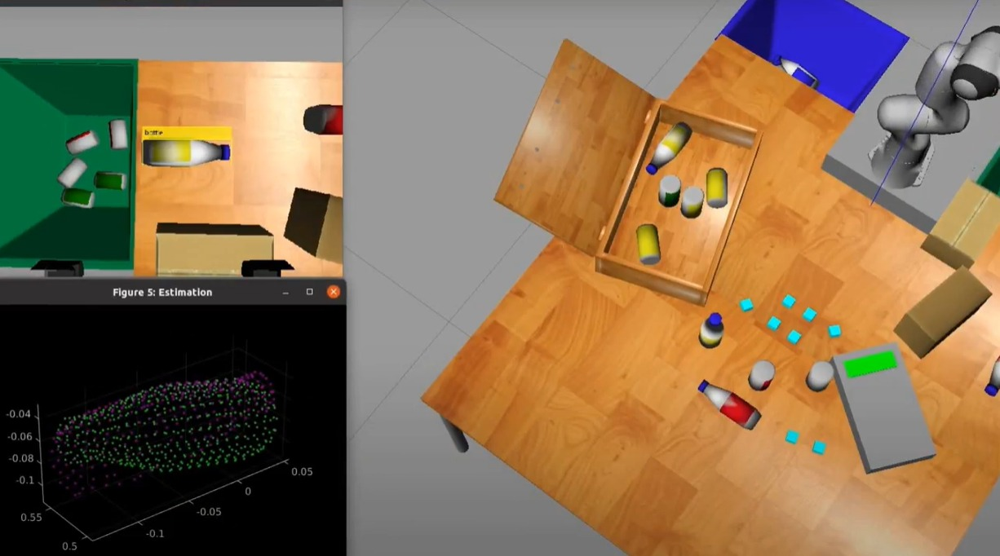
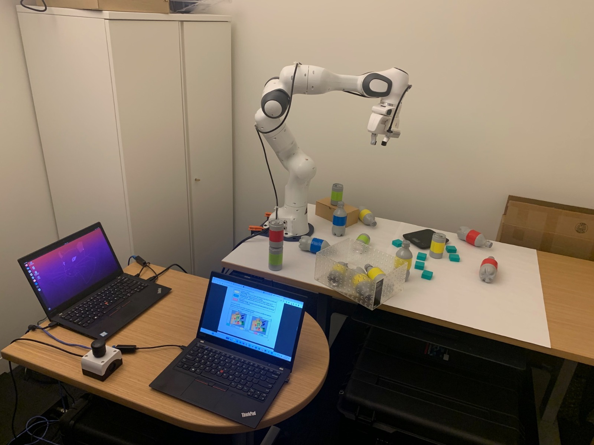
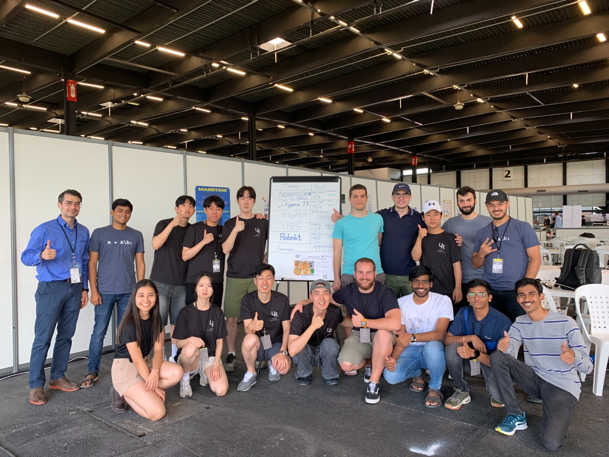
Developed an autonomous robot manipulation system achieving significant success in international competition.
- Engineered a multi-stage perception pipeline combining YOLOv4 for object detection and RANSAC-ICP for point cloud registration, cascaded point cloud processing involving voxel downsampling, normal estimation, and outlier removal using statistical filtering
- Created point cloud processing pipeline that estimates surface normals and local curvature through least-squares plane fitting on neighborhood points, enabling robust grasp point selection by identifying antipodal point pairs with opposing surface normals aligned with gripper approach direction
- Developed state machine-based task planning using hierarchical finite state machines for high-level task decomposition, integrating grasp planning, motion planning and force control primitives with fallback recovery behaviors to achieve 85% grasp success in cluttered environments
- Secured 5th Rank globally and 3rd in Asia, among >20 teams worldwide
Industrial Vision System | Systemantics
Aug. 2023 - Dec. 2023
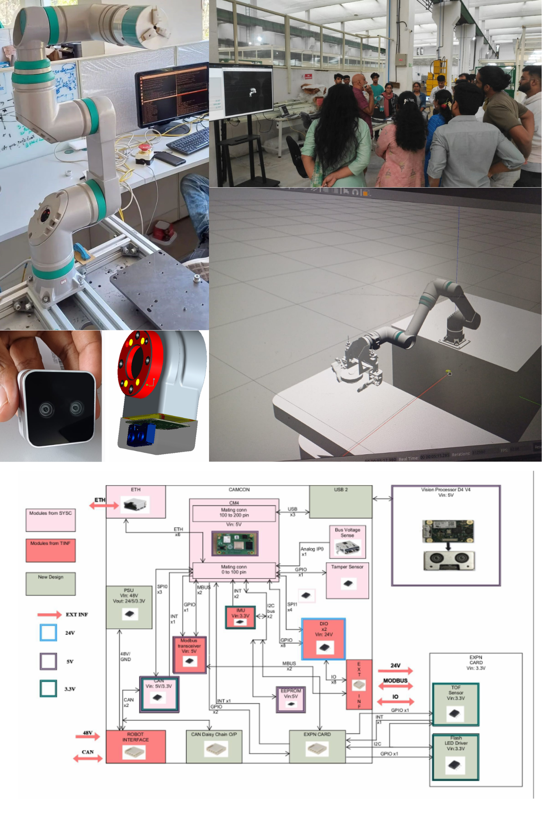
- Architected dual-sensor vision system with ROS2, RealSense D405, and VL53L3CX ToF sensors, achieving 98.5% pick success rate in industrial robotics tasks
- Engineered comprehensive vision pipeline integrating YOLO-based object detection with stereo-ToF point cloud processing, achieving 95% classification accuracy at 30 FPS and ±2mm depth accuracy on reflective industrial parts
- Designed ROS2 node architecture for sensor fusion and grasp point estimation, with parallel processing streams delivering low-latency (50ms) pick validation
- Implemented stereo depth sensing system integrating both geometric triangulation and ToF ranging, enabling robust depth estimation for complex industrial parts with varying surface properties
- Developed modular support board (12.70x9mm) featuring LED illumination control through KTD2691 driver with 128-level brightness control, optimizing illumination for varying surface conditions and environmental factors
- Designed real-time system architecture combining CAN bus communication, Ethernet connectivity, and MODBUS interfaces, achieving deterministic timing for robotic vision feedback
Machining Cost Estimation using AI | Final Year Project
Oct. 2022 - April 2023
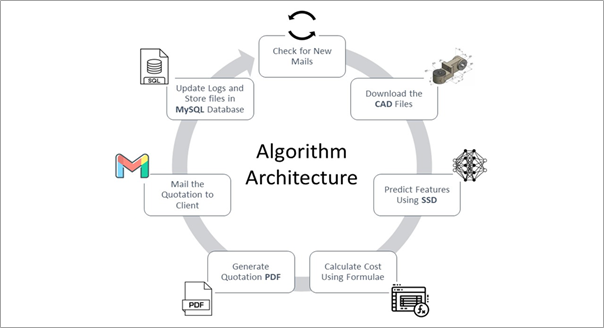
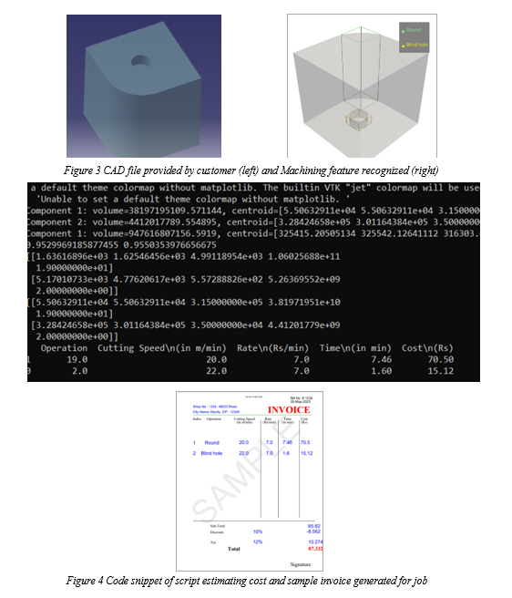
- Led a team of 4 to implement a Single Shot Multibox Detector (SSD) using PyTorch to detect and localize 24 different machining features in 3D CAD models, achieving 95% accuracy in feature recognition
- Engineered custom PyTorch neural network architectures with 3D convolutional layers for processing binvox-formatted CAD files, enabling accurate volume calculations and machining feature predictions
- Led the development of an AI-powered cost estimation system for machining operations, achieving 99.8% accuracy in cost predictions and 95% accuracy in machining feature recognition, validated against real vendor quotes with 94.8% correlation
- Built robust file processing pipeline integrating multiple formats (STL to binvox conversion) and technologies (email monitoring, MySQL database, PDF generation) to create a production-ready solution
- Created an automated archival system using MySQL for maintaining historical quote data, enabling data-driven improvements and ensuring seamless retrieval of past project information for reference
High Performance Electric Go-Kart | India Karting Race Season 6.0
Aug. 2021 - Mar. 2022
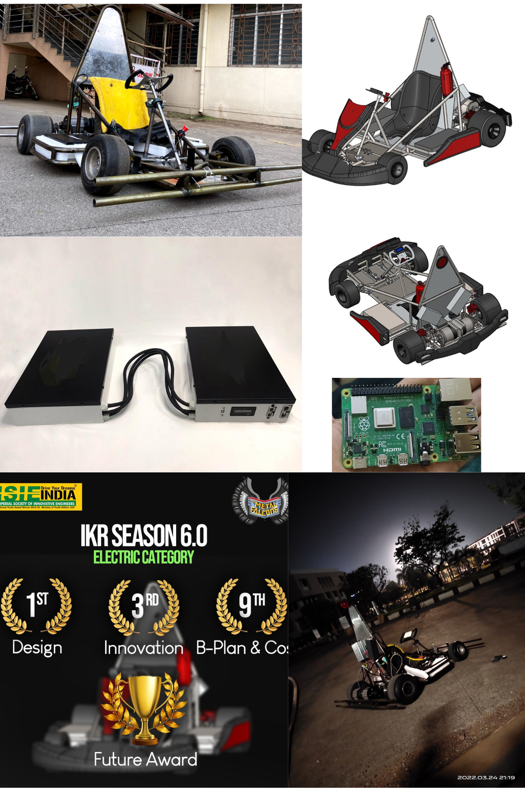
- Led 20-member cross-functional team to design and build award-winning electric kart
- Led the Electronics and Controls, was responsible for managing design and selection of 48V 72Ah NMC battery pack system optimized for 35km range, achieving 3.45kW capacity while maintaining a Factor of Safety of 1.4
- Implemented split battery configuration in sidepods to lower center of gravity and improve chassis packaging, enabling 13% reduction in overall kart height
- Developed comprehensive battery thermal management system using MAX31856 thermocouples for real-time temperature monitoring and safety controls
- Led/Architected torque vectoring control system using RPI model 4 and ROS2 C++ Nodes, enabling independent wheel speed control for optimized cornering
- Integrated I2C-based LCD display system for real-time monitoring of critical parameters including battery SoC, temperature, and vehicle speed
- Secured 1st in Engineering Design and 2nd Runner-up in Innovation under electric category
Autonomous Line follower Drone | MathWorks Minidrone Competition
July. 2022 - Sept. 2022
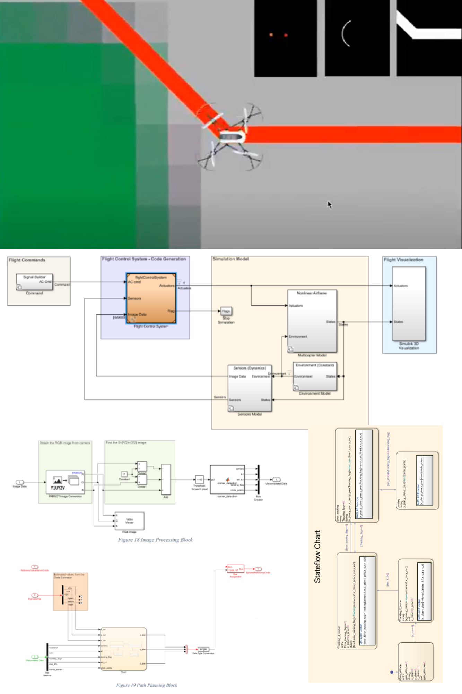
- Implemented 4+ flight phases
- Designed arc navigation architecture with an inner loop (Path Planner) running at 10Hz and outer loop at 2Hz, achieving sub-2cm cross-track error using velocity control
- Designed outer radius (28 pixels), using an adjustable 2.3 inner radius (26 pixels) and configurable field of view for look-ahead point selection
- Developed velocity control system maintaining constant Speed using VD = V(vx² + vy²) = &(Rmax + Rmin)/2, with tunable α parameter balancing tracking accuracy versus completion time
- Integrated Image-Based Visual Servoing (IBVS) scheme to generate spatial coordinates (xw, yw) while maintaining constant altitude (zH)
- Developed Multi-MAV state machine covering phases like Takeoff, Following, End-Marker, Landing with robust transition logic